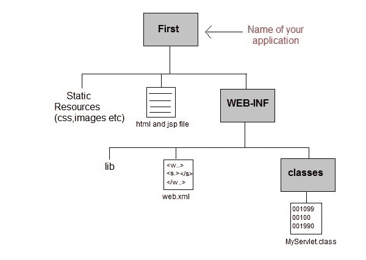
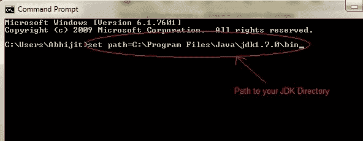
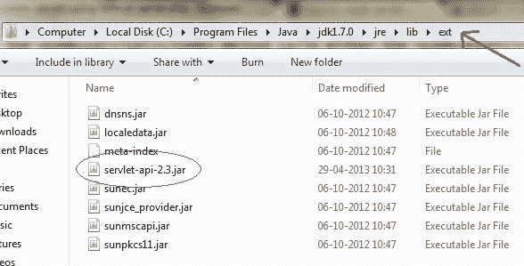
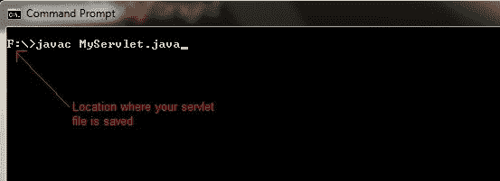
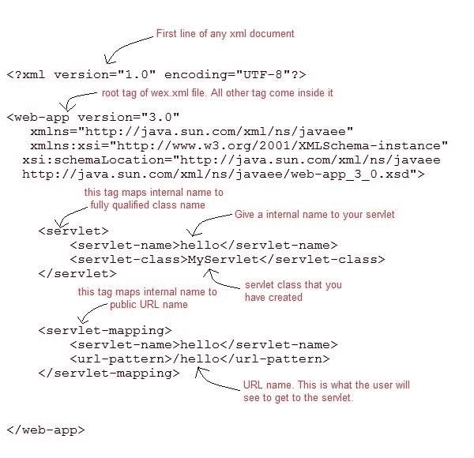
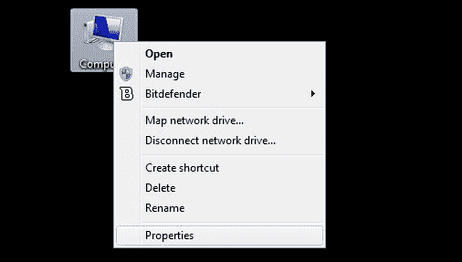
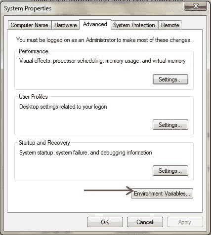
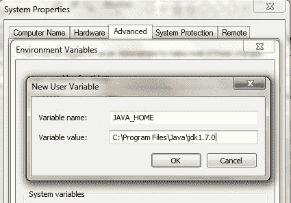
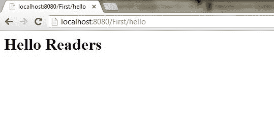

使用 tomcat 服务器创建 Servlet 应用的步骤
原文：https://www.studytonight.com/servlet/steps-to-create-servlet-using-tomcat-server.php
要创建一个 Servlet 应用，您需要遵循下面提到的步骤。这些步骤对于所有的网络服务器都是通用的。在我们的例子中，我们使用的是 Apache Tomcat 服务器。Apache Tomcat 是一个用于测试 servlets 和 JSP 技术的开源 web 服务器。下载最新版本的 Tomcat 服务器并安装在你的机器上。
在您的机器上安装 Tomcat 服务器后，请遵循以下步骤:
- 为您的应用创建目录结构。
- 创建一个 Servlet
- 编译 Servlet
- 为应用创建部署描述符
- 启动服务器并部署应用
下面详细解释了这 5 个步骤，让我们创建第一个 Servlet 应用。
1.创建目录结构
Sun 微系统定义了创建 servlet 应用必须遵循的唯一目录结构。

在 Apache-Tomcat\webapps 目录中创建上述目录结构。所有 HTML、静态文件(图片、css 等)直接保存在网络应用文件夹下。而所有的 Servlet 类都保存在classes文件夹中。
web.xml(部署描述符)文件保存在WEB-INF文件夹下。
2.创建一个 Servlet
创建 servlet 有三种不同的方法。
- 通过实现 Servlet 接口
- 通过扩展泛型 Servlet 类
- 通过扩展 HttpServlet 类
但是通常一个 servlet 是通过扩展 HttpServlet 抽象类创建的。如前所述 HttpServlet 给出了 Servlet 接口的service()方法的定义。我们将要创建的 servlet 类不应该覆盖service()方法。我们的 servlet 类将只覆盖doGet()或doPost()方法。
当对 servlet 的请求到来时，网络容器调用 servlet 的service()方法，根据请求的类型，service()方法调用doGet()或doPost()方法。
注意:默认情况下，请求是获取请求。
import javax.servlet.*;
import javax.servlet.http.*;
import java.io.*;
public MyServlet extends HttpServlet
{
public void doGet(HttpServletRequest request,HttpServletResposne response)
throws ServletException {
response.setContentType("text/html");
PrintWriter out = response.getWriter();
out.println("<html><body>");
out.println("<h1>Hello Readers</h1>");
out.println("</body></html>");
}
}
将上述代码写在记事本文件中，并将其保存为您电脑上的任何地方的MyServlet.java。从那里编译它(在下一步中解释)，并将类文件粘贴到您必须在 Tomcat/webapps 目录中创建的WEB-INF/classes/目录中。
3.编译一个 Servlet
要编译一个 Servlet，需要一个 JAR 文件。不同的服务器需要不同的 JAR 文件。在 Apache Tomcat 服务器中servlet-api.jar文件是编译一个 servlet 类所必需的。
编译 Servlet 的步骤:
- 设置类路径。

- 下载 servlet-api.jar 文件。
- 将 servlet-api.jar 文件粘贴到
Java\jdk\jre\lib\ext目录中。

- 编译 Servlet 类。

注意:编译完你的 Servlet 类后，你必须将类文件粘贴到WEB-INF/classes/目录中。
4.创建部署描述符
部署描述符(DD) 是 Web 容器用来运行 Servlets 和 JSP 页面的 XML 文档。DD 用于几个重要目的，例如:
- 将 URL 映射到 Servlet 类。
- 初始化参数。
- 定义错误页面。
- 安全角色。
- 声明标记库。
我们将在后面详细讨论所有这些。现在我们将看到如何为我们的 web 应用创建一个简单的 web.xml 文件。

5.启动服务器
双击 startup.bat 文件启动你的 Apache Tomcat 服务器。
或者，使用 RUN 提示符在您的 windows 计算机上执行以下命令。
C:\apache-tomcat-7.0.14\bin\startup.bat
6.第一次启动 Tomcat 服务器
如果你是第一次启动 Tomcat 服务器，你需要在环境变量中设置 JAVA_HOME。以下步骤将向您展示如何设置它。
- 右键点击我的电脑，进入物业。

- 进入高级选项卡，点击环境变量...按钮。

- 点击新建按钮，在变量名文本字段中输入 JAVA_HOME ，在变量值文本字段中输入 JDK 的路径。单击确定保存。

7.运行 Servlet 应用
打开浏览器，输入http:localhost:8080/First/hello

万岁！我们的第一个 Servlet 应用成功运行。